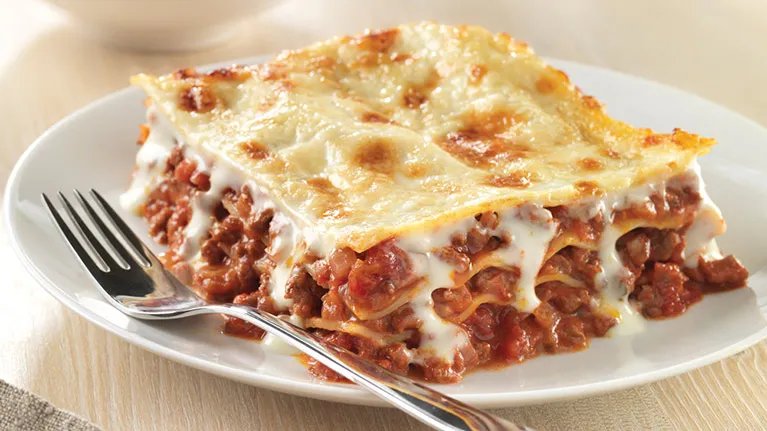

Lasagne

Description
This is my homemade lasagna recipe. It is rich, succulent and will fill you right up.
I hope you find this recipe easy to follow and enjoy a hearty delicious Italian Lasagne.
Ingredients
- ground beef
- spaghetti sauce
- cottage cheese
- mozarella cheese
- eggs
- parmesan cheese
- parsley
- salt
- pepper
- lasagne sheets
Steps
- In a large skillet over medium heat brown the ground beef. Drain the grease. Add spaghetti sauce and simmer for 5 minutes.
- In a large bowl, mix together the cottage cheese, 2 cups of the mozzarella cheese, eggs, half of the grated Parmesan cheese, dried parsley, salt andground black pepper.
- To assemble, in the bottom of a 9×13 inch baking dish evenly spread ¾ cup of the sauce mixture. Cover with 3 uncooked lasagna noodles, 1¾ cup of the cheese mixture, and ¼ cup sauce. Repeat layers twice.
Top with 3 noodles, remaining sauce, remaining mozzarella and Parmesan cheese. Add ½ cup water to the edges of the pan. Cover with aluminum foil.
- Bake in a preheated 175 degrees C oven for 45 minutes. Uncover and bake an additional 10 minutes. Let stand 10 minutes before serving.